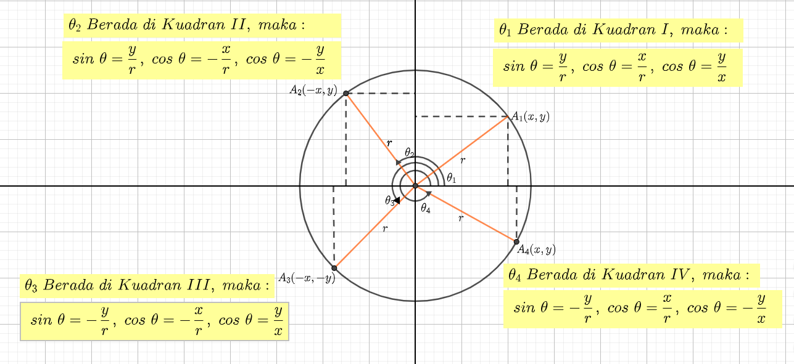

2.1. Menentukan Perbandingan Trigonometri Bernilai Positif atau Negatif
Setelah mempelajari topik ini diharapkan:
Siswa mampu menentukan rasio trigonometri sudut-sudut di berbagai kuadran.
Siswa mampu menentukan rasio trigonometri sudut-sudut yang berelasi.
Amatilah Gambar 2.1 dibawah ini !

Gambar 2.1
Gambar 2.1 menunjukkan sebuah lingkaran pada koordinat kartesius dimana didalamnya dibagi menjadi 4 kuadran yaitu:
a. \(θ_{1}\) berada di kuadran I, maka \(sin \space θ = \frac{y}{r}\), \(cos \space θ = \frac{x}{r}\), \(tan \space θ = \frac{y}{x}\)
b. \(θ_{2}\) berada di kuadran II, maka \(sin \space θ = \frac{y}{r}\), \(cos \space θ = -\frac{x}{r}\), \(tan \space θ = -\frac{y}{x}\)
c. \(θ_{3}\) berada di kuadran III, maka \(sin \space θ = -\frac{y}{r}\), \(cos \space θ = -\frac{x}{r}\), \(tan \space θ = \frac{y}{x}\)
d. \(θ_{4}\) berada di kuadran IV, maka \(sin \space θ = -\frac{y}{r}\), \(cos \space θ = \frac{x}{r}\), \(tan \space θ = -\frac{y}{x}\)
Setelah kita identifikasi 4 kuadran di atas maka kita dapat menyimpulkan bahwa pada setiap kuadran memiliki perbandingan trigonometri yang berbeda-beda sehingga menunjukkan perubahan tanda nilai sinus, kosinus, dan tangen. Apabila θ berubah dari 0° hingga 360° maka:
Berikut tabel 2.1 menunjukan perubahan tanda nilai sinus, kosinus, dan tangen
Apabila θ berubah dari 0° hingga 360°